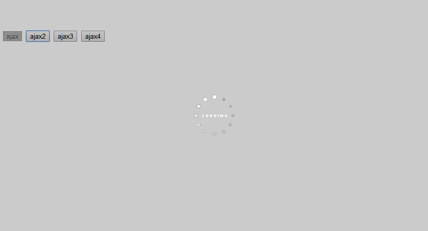

network
ajax请求的重写,防重复点击
它的核心还是使用$.ajax，只是在这里加上了加载效果，然后去除了重复的提交
它的使用方法和$.ajax和$.get和$.post一致，返回的也是deferred.
效果如下图 
API
ajax:({},target)
ajax调用,同jquery的ajax,但多了一个target参数，
当传入此参数时loading将在target上loading,如果不传，加载效果就是全屏的。
$('#btn-send').click(function() {
Network.ajax({
url: "/ajax.json",
data: "a=1",
beforeSend: function() {
console.log('发起请求')
}
},this).done(function() {
console.log('请求结束')
});
});
get:(url,data,fun,dataType)
同jquery的get方法,以get方式的ajax请求，这里没有target，为全屏加载效果
post:(url,data,fun,dataType)
同$.post,以post方式的ajax请求，也是全屏的加载效果